Lectura 2-1: Probabilidad y estadística#
La probabilidad es el lenguaje de la incertidumbre que constituye también la base de la inferencia estadística .
Constituye una parte importante de los cimientos de la estadística, ya que nos proporciona las herramientas matemáticas para describir sucesos inciertos.
El estudio de la probabilidad surgió en parte debido al interés por comprender los juegos de azar, como las cartas o los dados.
Estos juegos proporcionan ejemplos útiles de muchos conceptos estadísticos, porque cuando repetimos estos juegos la probabilidad de que se produzcan diferentes resultados sigue siendo (casi) la misma.
Probabilidad y estadística#
El problema estudiado en probabilidad es: dado un proceso generador de datos, ¿cuáles son las propiedades de los resultados?
El problema estudiado en la inferencia estadística, la minería de datos y el aprendizaje automático es: dados los resultados, ¿qué podemos decir sobre el proceso que genera los datos observados?
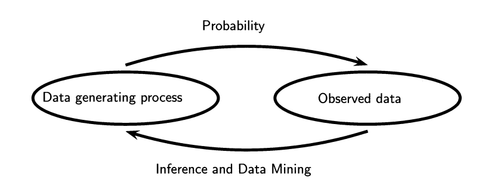
¿Qué es la probabilidad?#
Pensamos en la probabilidad como un número que describe la posibilidad de que ocurra algún acontecimiento, que oscila entre cero (imposibilidad) y uno (certeza).
Las probabilidades también pueden expresarse en porcentajes: cuando la previsión meteorológica predice un veinte por ciento de posibilidades de que llueva hoy.
En cada caso, estos números expresan la probabilidad de que se produzca ese acontecimiento concreto, que va de absolutamente imposible a absolutamente seguro.
Conceptos de probabilidad#
Un experimento aleatorio consiste en medir un proceso cuyo resultado es incierto.
Ejemplos: lanzar una moneda al aire, lanzar un dado de 6 caras o probar una nueva ruta al trabajo para ver si es más rápida que la antigua.
El conjunto de todos los resultados posibles de un experimento aleatorio es el espacio muestral \(\Omega\) (puede ser discreto o continuo).
Para lanzar una moneda \(\Omega = \{cara, cruz\}\) ,
para el dado de 6 caras \(\Omega=\{1,2,3,4,5,6\}\),
y para la cantidad de tiempo que se tarda en llegar al trabajo \(\Omega\) son todos los números reales posibles mayores que cero.
Un evento \(E \subseteq \Omega\) corresponde a un subconjunto de esas salidas.
Por ejemplo, \(E = \{ 2,4,6 \}\) es el suceso de observar un número par al lanzar un dado.
Probabilidad#
Ahora podemos esbozar las características formales de una probabilidad, que fueron definidas por primera vez por el matemático ruso Andrei Kolmogorov.
Una probabilidad \(\mathbb{P}\) es una función de valor real definida sobre \(\Omega\) que satisface las siguientes propiedades:
Propiedades
Para cualquier suceso \(E \subseteq \Omega\) , \(0 \leq \mathbb{P}(E) \leq 1\).
La probabilidad del espacio muestral es 1: \(\mathbb{P}(\Omega) =1\).
Sea \(E_{1},E_{2},\dots,E_{k} \in \Omega\) son conjuntos disjuntos
En cualquier caso, las probabilidades no pueden ser negativas ni mayores que 1.
Interpretación de las probabilidades#
Existen dos interpretaciones comunes de las probabilidades: frecuencias y grados de creencia (o probabilidades bayesianas).
Probabilidad frecuentista
En la interpretación frecuentista, se define a la probabilidad de un suceso \(\mathbb{P}(E)\) como el límite de su frecuencia relativa en muchos ensayos.
Por ejemplo, si decimos que la probabilidad de que salga cara es 1/2, queremos decir que si lanzamos la moneda muchas veces, la proporción de veces que sale cara tiende a 1/2 a medida que aumenta el número de lanzamientos.
Cuando el espacio muestral \(\Omega\) es finito, podemos decir que $\(\mathbb{P}(E) = \frac{\text{casos favorables}} {\text{casos totales}} = \frac{|E|}{|\Omega|}\)$
La probabilidad como grado de creencia
La interpretación del grado de creencia (también conocida como interpretación bayesiana o interpretación subjetiva) es que \(\mathbb{P}(E)\) mide el grado de creencia de un observador de que \(E\) es cierto.
Si yo le preguntara “¿Qué probabilidad hay de que EE.UU. vuelva a la Luna en 2026?”, usted podría responder a esta pregunta basándose en sus conocimientos y creencias.
Aunque no haya frecuencias relevantes para calcular una probabilidad frecuentista.
En cualquiera de las dos interpretaciones, exigimos que se cumplan las propiedades 1 a 3.
La diferencia de interpretación no importará mucho hasta que nos ocupemos de la inferencia estadística.
En este caso, las distintas interpretaciones dan lugar a dos escuelas de inferencia: la frecuentista y la bayesiana.
La regla de la resta#
La probabilidad de que un suceso \(E\) no ocurra es uno menos la probabilidad de que el suceso ocurra: $\(\mathbb{P}(\neg E) = 1 - \mathbb{P}(E)\)$
Por ejemplo, si la probabilidad de sacar un uno en un solo lanzamiento de dado es 1/6, entonces la probabilidad de sacar cualquier cosa que no sea un uno es 5/6.
Métodos combinatorios#
Hay algunos hechos de la teoría del recuento que son útiles para calcular probabilidades.
Dados \(n\) objetos, el número de maneras de ordenar estos objetos es \(n!=n(n-1)(n-2)\cdots3\cdot2\cdot1\).
Por convención, definimos $\(0!=1\)$
También definimos $\({n \choose k} = \frac{n!}{k!(n-k)!}\)$ léase “n elige k”, que es el número de formas distintas de elegir k objetos de n.
Por ejemplo, si tenemos una clase de 20 personas y queremos seleccionar un comité de 3 estudiantes, entonces hay $\({20 \choose 3} = \frac{20!}{3!17!}=1140\)$ posibles comités.
import math
# Using the factorial method
result1 = math.factorial(20) / (math.factorial(3) * math.factorial(20 - 3))
print(result1)
1140.0
# Using the built-in `comb()` function (available from Python 3.8 onwards)
comb = math.comb(20, 3)
print(comb)
per =math.perm(20,3)
print(per)
1140
6840
Observamos las siguientes propiedades:
-\({n \choose 0} = {n \choose n}=1\)
y
-\({n \choose k} = {n \choose n-k}\)
Probabilidades condicionales#
La probabilidad condicional para \(Y\) dado \(X\) se define como: $\(\mathbb{P}(Y|X) = \frac{\mathbb{P}(X,Y)}{\mathbb{P}(X)}\)$
\(\mathbb{P}(Y|X)\) puede interpretarse como la fracción de veces que ocurre \(Y\) cuando se sabe que ocurre \(X\).
Si \(X\) y \(Y\) son independientes \(\mathbb{P}(Y|X)=\mathbb{P}(Y)\).
Ejemplo
En el experimento de lanzar un dado justo, sea G el suceso de obtener un resultado mayor que 2 (\(G=\{3,4,5,6\}\)) y O el suceso de obtener un número impar (\(O=\{1,3,5\}\)).
¿Cuál es el valor de \(\mathbb{P}(G|O)\)?
Utilizando la definición \(\mathbb{P}(X)=\frac{\text{casos favorables}}{\text{casos totales}}\): \(\mathbb{P}(G)=4/6\), \(\mathbb{P}(O)=3/6\), y \(\mathbb{P}(G|O)= 2/3.\)
Obsérvese que una vez que conocemos O, el número de casos favorables para G se reducido a \(\{3,5\}\) y el número total de casos a \(\{1,3,5\}\).
Ahora, según la definición anterior \(\mathbb{P}(G|O) = \frac{\mathbb{P}(G,O)}{\mathbb{P}(O)}\).
Donde \(\mathbb{P}(G,O) = 2/6\) (los casos favorables corresponden a la intersección entre G y O \(\{3,5\}\)).
Entonces \(\mathbb{P}(G|O) = \frac{\mathbb{P}(G,O)}{\mathbb{P}(O)}=\frac{2/6}{3/6}=2/3\).
Atención
En general no es el caso que \(\mathbb{P}(Y|X) = \mathbb{P}(X|Y)\).
La gente confunde esto todo el tiempo.
Por ejemplo, la probabilidad de tener manchas dado que se tiene sarampión es 1, pero la probabilidad de tener sarampión dado que se tienen manchas no es 1.
En este caso, la diferencia entre \(\mathbb{P}(Y|X)\) y \(\mathbb{P}(X|Y)\) es obvia, pero hay casos en los que no lo es tanto.
Probabilidades condicionales: Ejemplo#
Una prueba médica para detectar una enfermedad D tiene resultados “positivos” y “negativos”, las probabilidades son
D
\(\neg\) D
positive
0.009
0.099
negative
0.001
0.891
A partir de la definición de probabilidad condicional
\[\mathbb{P}(\text{positive}|D) = \frac{\mathbb{P}(\text{positive},D)}{\mathbb{P}(D)} = \frac{0.009}{0.009+0.001} = 0.9\]
# Define the variables
numerator = 0.009
denominator = 0.009 + 0.001
# Calculate and assign the result
pos_d = numerator / denominator
# Print the result
print(pos_d) #
0.9
y $\(\mathbb{P}(\text{negative}|\neg D) = \frac{\mathbb{P}(\text{negative},\neg D)}{\mathbb{P}(\neg D)} = \frac{0.891}{0.891+0.0991} \approx 0.9\)$
numerator = 0.891
denominator = 0.891 + 0.0991
# Calculate and assign the result
neg_notd = numerator / denominator
# Print the result
print(neg_notd)
0.8999091000909
Aparentemente, la prueba es bastante precisa.
Las personas enfermas dan positivo el 90% de las veces y las sanas dan negativo el 90% de las veces.
Supongamos que te haces la prueba y obtienes un positivo.
¿Cuál es la probabilidad de que tenga la enfermedad? La mayoría de la gente responde \(0.90\).
La respuesta correcta es $\(\mathbb{P}(D|\text{positive}) = \frac{\mathbb{P}(D,\text{positive})}{\mathbb{P}(\text{positive})} = \frac{0.009}{0.009+0.099} \approx 0.08\)$
# Define the variables
numerator = 0.009
denominator = 0.009 + 0.099
# Calculate and assign the result
d_pos = numerator / denominator
# Print the result
print(d_pos)
0.08333333333333333
La lección aquí es que necesitas calcular la respuesta numéricamente.
No confíes en tu intuición.
Teorema de Bayes y probabilidades totales#
La probabilidad condicional \(\mathbb{P}(Y|X)\) y \(\mathbb{P}(X|Y)\) pueden expresarse en función de la otra mediante el teorema de Bayes. $\(\mathbb{P}(Y|X)=\frac{\mathbb{P}(X|Y)\mathbb{P}(Y)}{\mathbb{P}(X)}\)$
Entonces sea \(\{ Y_1,Y_2,\dots, Y_k \}\) un conjunto de sucesos mutuamente excluyentes del espacio muestral de un Variable aleatoria \(X\) , el denominador del teorema de Bayes de Bayes puede expresarse como $\(\mathbb{P}(X)= \sum_{i=1}^{k} \mathbb{P}(X,Y_i) = \sum_{i=1}^{k} \mathbb{P}(X|Y_i)\mathbb{P}(Y_i)\)$
Ejemplo
Divido mis correos electrónicos en tres categorías: \(A_1\)=“‘spam’’, \(A_2\)=“‘bajaprioridad’’, \(A_3\)=“‘prioridad alta’’.
Sabemos que \(\mathbb{P}(A_1)=0,7\), \(\mathbb{P}(A_2)=0,2\) y \(\mathbb{P}(A_3)=0.1\), claramente \(0.7+0.2+0.1=1\).
Sea \(B\) el suceso de que el correo contenga la palabra “gratis”.
Sabemos que \(\mathbb{P}(B|A_1)=0,9\) \(\mathbb{P}(B|A_2)=0,01\) y \(\mathbb{P}(B|A_3)=0.01\) claramente \(0.9+0.01+0.01 \neq 1\)
¿Cuál es la probabilidad de que un correo electrónico con la palabra “gratis” sea “spam”?
Usando Bayes: $\(\mathbb{P}(A_1|B) = \frac{\mathbb{P}(B|A_1)\times \mathbb{P}(A_1)}{\mathbb{P}(B)} = \frac{0.9 \times 0.7}{\mathbb{P}(B)} = \frac{0.63}{\mathbb{P}(B)}\)$
Utilizando probabilidades totales:
\[\begin{split}\begin{aligned} \mathbb{P}(B) & = & \mathbb{P}(B|A_1)\times\mathbb{P}(A_1)+\mathbb{P}(B|A_2)\times\mathbb{P}(A_2)+\mathbb{P}(B|A_3)\times\mathbb{P}(A_3) \\ & = & 0.9 \times 0.7 + 0.01 \times 0.2 + 0.01 \times 0.1 = 0.633 \end{aligned}\end{split}\]Finalmente,
\[\mathbb{P}(A_1|B) = \frac{0.63}{0.633} = 0.995\]
# Define the variables
a1 = 0.7
a2 = 0.2
a3 = 0.1
b_a1 = 0.9
b_a2 = 0.01
b_a3 = 0.01
# Calculate the weighted sum
b = b_a1*a1 + b_a2*a2 + b_a3*a3
# Calculate the proportion of a1 (weighted by b_a1) in the weighted sum b
a1_b = b_a1*a1 / b
# Print the result
print(a1_b)
0.995260663507109
Variable aleatoria#
Una variable aleatoria es un mapeo (o función) $\(X: \Omega \rightarrow \mathbb{R}\)\( que asigna un valor real \)X(e)\( a cualquier suceso de \)\Omega$.
Ejemplo: Lanzamos una moneda al aire 10 veces. El resultado de cada lanzamiento es cara \(H\) o cruz \(T\).
Sea \(X(e)\) el número de caras en la secuencia de resultados.
Si \(e=HHTHHTHHTT\), entonces \(X(e)=6\).
Una variable aleatoria puede ser en muchos casos la función identidad.
Por ejemplo, si lanzamos un dado de 6 caras una vez y \(X(e)\) es el valor resultante del dado, entonces \(X(e)=e\), para \(e \in \{1,2,3,4,5,6\}\).
En estos casos, la noción de que una variable aleatoria es una función puede ser confusa (se parece más a un conjunto), pero siempre podemos reconstruir la función de asignación como función de identidad.
Es importante entender que podemos tener fácilmente diferentes variables aleatorias de un mismo espacio muestral.
Ejemplo: lanzamos un dado dos veces, \(X(e)\) es la suma de las dos tiradas resultantes y \(Y(e)\) es el producto de estos dos números.
Para el suceso \(e=\{4,5\}\), \(X(e)=9\) and \(Y(e)=20\).
Ejemplo#
Lanzamos una moneda al aire 2 veces. Sea \(X\) el número de caras obtenidas.
La variable aleatoria y su distribución se resumen como:
\(e\) |
\(\mathbb{P}(e)\) |
\(X(e)\) |
|---|---|---|
TT |
1/4 |
0 |
TH |
1/4 |
1 |
HT |
1/4 |
1 |
HH |
1/4 |
2 |
\(x\) |
\(\mathbb{P}(X = x)\) |
|---|---|
0 |
1/4 |
1 |
1/2 |
2 |
1/4 |
Definiciones de Variable Aleatoria (R.V)#
Sea \(X\) un R.V , definimos función de distribución acumulativa (CDF) o \(F_{X}: \mathbb{R} \rightarrow [0,1]\) como: $\(F_{X}(x)=\mathbb{P}(X\leq x)\)$
Para el ejemplo anterior de lanzar una moneda justa dos veces y contar el número de caras, la FDA es la siguiente:
\[\begin{split}F_X(x) = \begin{cases} 0 & x<0 \\ 1/4 & 0 \leq x < 1 \\ 3/4 & 1 \leq x < 2 \\ 1 & x \geq 2. \end{cases}\end{split}\]
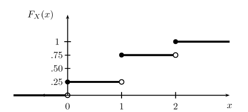
Las FDA pueden ser muy confusas.
Observe que la función es continua a la derecha, no decreciente, y que está definida para todo x, aunque la variable aleatoria sólo toma los valores 0,1 y 2.
Notación: cuando \(X\) es una variable aleatoria, \(x\) denota un valor particular de la variable aleatoria.
Variables aleatorias discretas#
Una V.A \(X\) es discreta si asigna las salidas a un conjunto contable.
Definimos la función de probabilidad o función de masa de probabilidad (FMP) de una variable aleatoria discreta \(X\) como \(f_{X}(x)=\mathbb{P}(X=x)\).
Entonces \(f_{X}(x) \geq 0 \forall x \in \mathbb{R}\), y \(\sum_{i}f_{X}(x_{i})=1\)
La Función acumlada de probabilidad de \(X\) se relaciona con \(f_{X}\) de la siguiente manera: $\(F_{X}= \mathbb{P}(X\leq x)= \sum_{x_{i} \leq x} f_{X}(x_{i})\)$
El PMF para el ejemplo anterior es:
Variable aleatoria continua#
Una V.A. \(X\) es continua si
existe una función \(f_{X}\) tal que \(f_{X}(x) \geq 0\) para todo \(x\), y: $\(\int_{-\infty}^{\infty}f_{X}(x)dX=1\)$
Para todo \(a \leq b\): $\(\mathbb{P}(a < X < b) = \int_{a}^{b} f_{X}(x)dx\)$
La función \(f_{X}\) se llama función de densidad de probabilidad (FDP).
La FDP se relaciona con la Función de distribución acumulada de la siguiente manera: $\(F_{X}(x)=\int_{-\infty}^{x}f_{X}(t)dt\)$
Entonces \(f_{X}(x) = F'_X(x)\) en todos los puntos \(x\) donde \(F_{X}\) es diferenciable.
Ejemplo: Supongamos que \(X\) tiene una FDP $\(f_X(x) = \begin{cases} 1 & \text{for }0\leq x \leq 1 \\ 0 & \text{otherwise.} \end{cases}\)$
Claramente, \(f_X(x) \geq 0\) y \(\int f_X(x) = 1\).
Una variable aleatoria con esta densidad se dice que tiene una distribución Uniforme (0,1).
Con ello se pretende captar la idea de elegir un punto al azar entre 0 y 1.
La FDA viene dada por $\(F_X(x) = \begin{cases} 0 & x<0 \\ x & 0\leq x \leq 1 \\ 1 & x>1. \end{cases}\)$
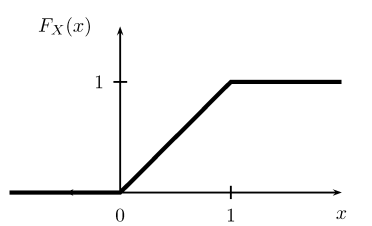
Las variables aleatorias continuas pueden llevar a confusión.
En primer lugar, tenga en cuenta que si \(X\) es continua, entonces \(\mathbb{P}(X = x) = 0\) para cada \(x\).
No trate de pensar en \(f(x)\) como \(\mathbb{P}(X = x)\).
Esto sólo es válido para variables aleatorias discretas.
Obtenemos probabilidades de una PDF mediante la integración.
Definiciones de Variables Aleatorias#
Una FDP puede ser mayor que 1 (a diferencia de una función de masa).
Por ejemplo, si \(f(x) = 5\) para \(x \in [0,1/5]\) y \(0\) en caso contrario.
Entonces \(f(x) \geq 0\) y \(\int f(x)dx = 1\), por lo que se trata de una FDP bien definida aunque \(f(x) = 5\) en algunos puntos.
Una FDP también puede interpretarse como la tasa de cambio en la función de distribución acumulada (FDA).
Así, cuando la probabilidad acumulada aumenta rápidamente, la densidad puede superar fácilmente 1.
Pero si calculamos el área bajo la función de densidad, nunca superará 1.
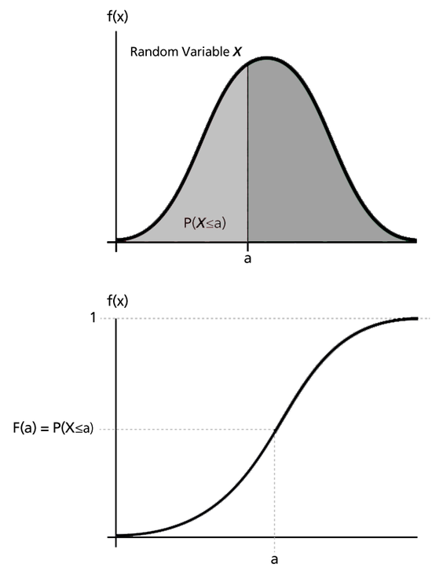
Fuente: http://reliawiki.org/index.php/Basic_Statistical_Background
Agunas propiedades#
\(\mathbb{P}( x < X \leq y) = F(y) - F(x)\)
\(\mathbb{P}(X > x) = 1 - F(x)\)
si \(X\) es continua: $\(\begin{aligned} F(b) - F(a) = \mathbb{P}(a < X < b) = \mathbb{P} ( a \leq X < b) \\ = \mathbb{P} ( a < X \leq b) = \mathbb{P} ( a \leq X \leq b) \end{aligned}\)$
Cuantiles#
Sea \(X\) una V.A. con FDA \(F\). La FDA inversa o función cuantil se define como $\(F^{-1}(q)= inf \left\{ x: \ F(x) > q \right\}\)$
Para \(q \in [0,1]\), si \(F\) es estrictamente creciente y continua, \(F^{-1}(q)\) es el único valor real tal que \(F(x)=q\).
Entonces \(F^{-1}(1/4)\) es el primer cuartil, \(F^{-1}(1/2)\) la mediana (o segundo cuartil) y \(F^{-1}(3/4)\) el tercer cuartil.
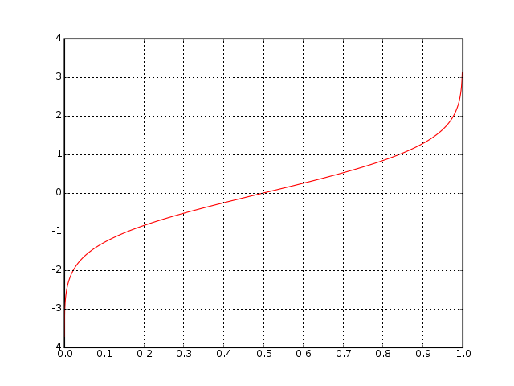
Algunas distribuciones#
Probability Function |
Parameters |
|
|---|---|---|
Binomial |
\(f_x= {n \choose x}p^{x}(1-p)^{n-x}\) |
\(n,p\) |
Normal |
\(f_x=\frac{1}{\sqrt{2\pi}\sigma}\exp^{-\frac{1}{2}\frac{(x-\mu)^2}{\sigma^{2}}}\) |
\(\mu, \sigma\) |
Poisson |
\(f_x=\frac{1}{x!}\lambda^{x}\exp^{-\lambda}\) |
\(\lambda\) |
Exponential |
\(f_x= \lambda \exp^{-\lambda x}\) |
\(\lambda\) |
Gamma |
\(f_x= \frac{\lambda^{\alpha}}{\Gamma(\alpha)} x^{\alpha -1}\exp^{-\lambda x}\) |
\(\lambda , \alpha\) |
Chi-square |
\(f_x=\frac{1}{2^{k/2} \Gamma(k/2)} x^{(\frac{k}{2} -1)} \exp^{-x/2}\) |
\(k\) |
Distribución Binomial#
La distribución binomial es una distribución discreta que permite calcular la probabilidad de un número determinado de aciertos en un número determinado de ensayos.
En cada ensayo hay éxito o fracaso y nada en medio (conocidos como “ensayos de Bernoulli”) dada una probabilidad conocida de éxito en cada ensayo.
Sea \(n\) el número de ensayos, \(x\) el número de aciertos y \(p\) la probabilidad de acierto, la función de masa de probabilidad de la distribución Binomial es la siguiente: $\(f_x(n,p)= {n \choose x}p^{x}(1-p)^{n-x}\)$
El coeficiente binomial \({n \choose x}\) describe el número de formas distintas en que se pueden elegir \(x\) elementos de un total de \(n\) elementos.
Ejemplo#
Ejemplo: el 20 de enero de 2018, el jugador de baloncesto Steph Curry acertó solo 2 de 4 tiros libres en un partido contra los Houston Rockets.
Sabemos que la probabilidad global de Curry de acertar tiros libres en toda la temporada fue de 0,91.
¿Cuál es la probabilidad de que acierte sólo el 50% de sus tiros libres en un partido?
from scipy.stats import binom
# Parameters
n = 4 # number of trials
k = 2 # number of successes
p = 0.91 # probability of success in one trial
# Calculate binomial probability
prob = binom.pmf(k, n, p)
print(prob)
0.040245659999999996
La distribución normal#
La distribución normal o gaussiana es extremadamente importante en estadística, en parte porque aparece todo el tiempo en la naturaleza.
Está controlada por dos parámetros, una media \(\mu\) y una desviación típica \(\sigma\).
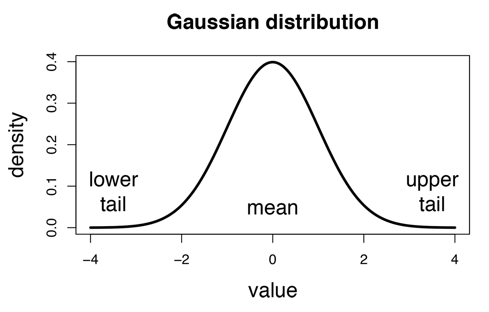
Como veremos en el siguiente ejemplo , la distribución normal se observa siempre que se suman muchas variaciones pequeñas e independientes para obtener un valor.
Ejemplo
Supongamos que usted y mil de sus amigos más íntimos se alinean en la línea media de un campo de fútbol.
Cada uno tiene una moneda en la mano. Cuando suena el silbato, empiezan a lanzar las monedas.
Cada vez que una moneda sale cara, esa persona da un paso hacia la portería de la izquierda.
Cada vez que una moneda sale cruz, esa persona da un paso hacia la meta de la derecha.
Cada persona lanza la moneda 16 veces, sigue los movimientos implícitos y luego se queda quieta.
Ahora medimos la distancia de cada persona desde la línea de mitad de camino.
¿Puedes predecir qué proporción de las mil personas que están paradas se encuentra en la línea de medio campo? ¿Y qué proporción hay a 5 metros a la izquierda de la línea?
Es difícil decir dónde acabará cada persona, pero se puede decir con gran seguridad cuál será el conjunto de posiciones.
Las distancias se distribuirán de forma aproximadamente normal, o gaussiana.
Esto es así aunque la distribución subyacente sea binomial.
Soccer 1
Soccer 2
Soccer 3
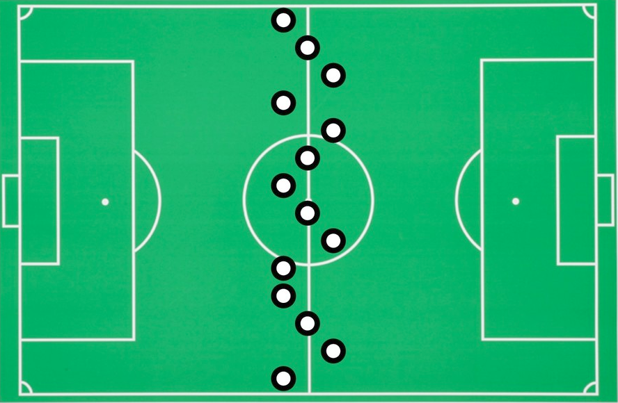
Soccer 4
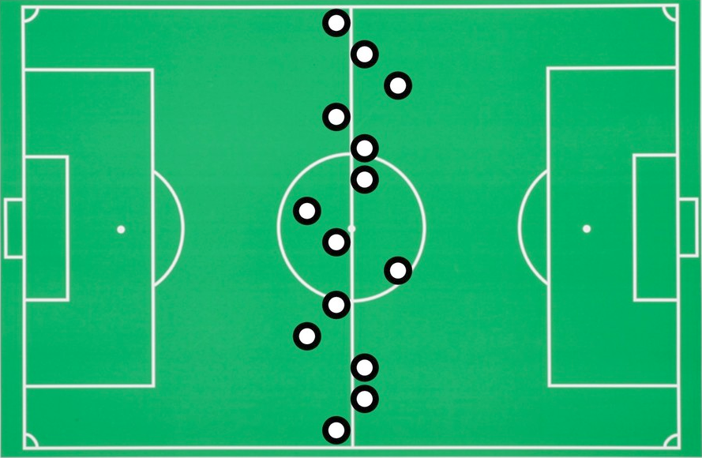
Soccer 5
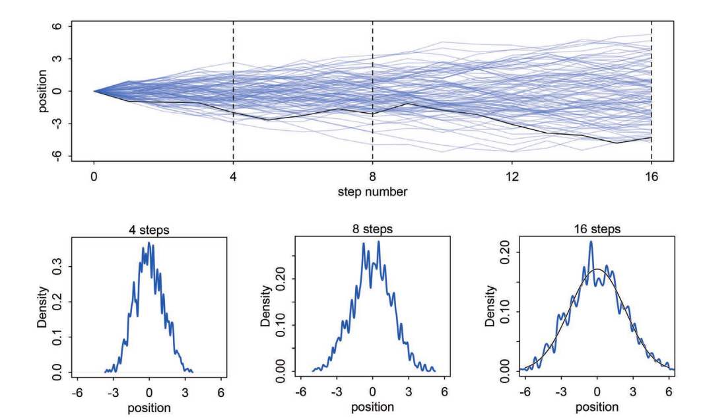
Los paseos aleatorios por el campo de fútbol convergen hacia una distribución normal.
Cuantos más pasos se dan, más se aproxima la coincidencia entre la distribución empírica real de las posiciones y la distribución normal ideal, superpuesta en el último gráfico del panel inferior.
import numpy as np
import matplotlib.pyplot as plt
from scipy.stats import binom, norm
def graficar_aproximacion(n, p):
# Parámetros para la normal
mu = n * p
sigma = np.sqrt(n * p * (1 - p))
# Rango de x
x = np.arange(binom.ppf(0.01, n, p), binom.ppf(0.99, n, p))
# Graficar binomial
plt.bar(x, binom.pmf(x, n, p), alpha=0.6, label="Binomial")
# Graficar normal
plt.plot(x, norm.pdf(x, mu, sigma), 'r-', label="Normal")
plt.legend()
plt.title(f"Aproximación Binomial-Normal para n={n} y p={p}")
plt.xlabel("x")
plt.ylabel("Probabilidad")
plt.grid(True)
plt.show()
# Ajustar valores de n y p para ver la aproximación
graficar_aproximacion(50, 0.5)
graficar_aproximacion(100, 0.5)
graficar_aproximacion(900, 0.1)
Definición formal de la distribución normal#
\(X\) tiene una distribución Normal o Gaussiana de parámetros \(\mu\) y \(\sigma\), \(X \sim N(\mu,\sigma^2)\) si
\[f_x=\frac{1}{\sqrt{2\pi}\sigma}\exp^{-\frac{1}{2}\frac{(x-\mu)^2}{\sigma^{2}}}\]Donde \(\mu \in \mathbb{R}\) es el “centro” o la “media” de la distribución y \(\sigma > 0\) es la “desviación típica”.
La media desplaza la distribución a lo largo del eje x.
La desviación típica afecta a la forma, de modo que cuanto mayor sea \(\sigma\), más amplia será la forma.
Cuando \(\mu = 0\) y \(\sigma =1\) tenemos una Distribución Normal Estándar denotada por \(Z\).
Nos referimos a la FDP por \(\phi(z)\) y a la FDA de una Normal Estándar por \(\Phi(z)\).
Se tabulan los valores de \(\Phi(z)= \mathbb{P}(Z \leq z)\).
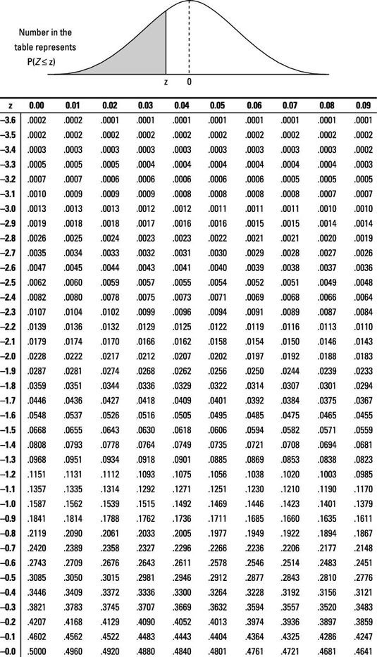
Vamos a tratar de entender los principales componentes de \(\phi(z)\) como se muestra en . $\(\phi(z) = \frac{1}{\sqrt{2\pi}} \exp^{-\frac{1}{2}x^2}\)$
Aquí hay un gráfico de sólo el exponente \(-\frac{1}{2}x^2\).
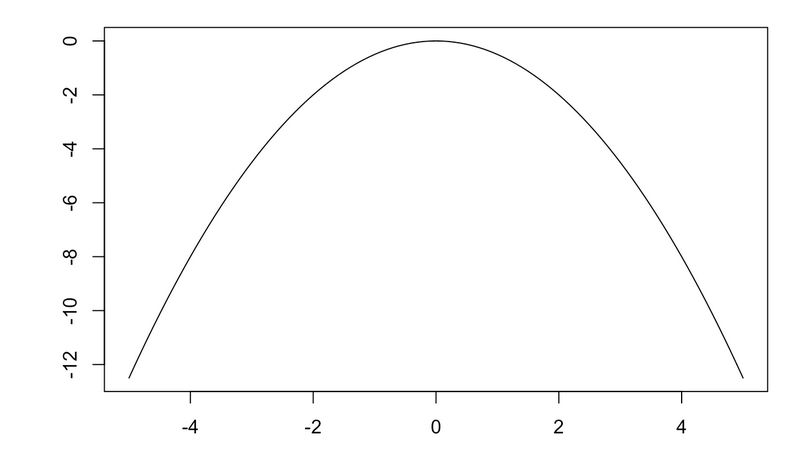
Como puedes ver, se trata de una simple parábola.
Cuando elevamos \(\exp\) a la potencia de \(-\frac{1}{2}x^2\) obtenemos el siguiente gráfico.
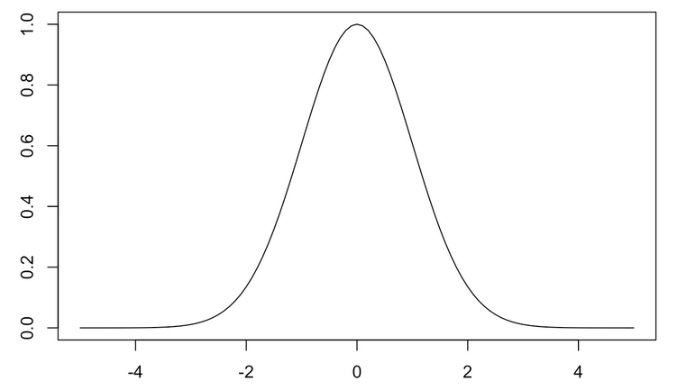
Tomando la exponencial de una parábola negativa es lo que nos da la curva de campana.
Tal cual, el área bajo la curva es \(\sqrt{2\pi}\), por lo que se incluye la constante \(\frac{1}{\sqrt{2\pi}}\) para que sea igual a 1.
Por último, el \(\frac{1}{2}\) en el exponente asegura que la varianza es igual a 1.
Para generalizar a cualquier distribución normal, simplemente incluimos los parámetros \(\mu\) y \(\sigma\) $\(\frac{1}{\sqrt{2\pi}\sigma}\exp^{-\frac{1}{2}\frac{(x-\mu)^2}{\sigma^{2}}}\)$
Observa que \(\sigma\) escala la constante, pero que la acción real ocurre en el exponente.
El punto más alto de la densidad es desplazado por \(\mu\), y luego dividido por \(\sigma\).
Propiedades Útiles#
Si \(X \sim N(\mu, \sigma^2)\), entonces \(Z=(X-\mu)/\sigma \sim N(0,1)\).
Si \(Z \sim N(0,1)\), then \(X=\mu+\sigma Z \sim N(\mu, \sigma^2)\)
Deje \(X_{i} \sim N(\mu_{i},\sigma_{i}^{2})\) ,\(i=1,\dots,n\) ser una variable aleatoria independiente, entonces: $\(\sum_{i=1}^{n}X_{i}\sim N( \sum_{i=1}^{n}\mu_{i}, \sum_{i=1}^{n}\sigma_{i}^{2})\)$
Ejemplo
En python podemos acceder a la función de densidad de probabilidad (PDF), la función de distribución acumulativa (CDF), la función de cuantiles y la generación de números aleatorios de las distribuciones.
Para una distribución Normal, los comandos en Python son
norm.pdf(x, loc, scale): Esta es la función de densidad de probabilidad (PDF).norm.cdf(x, loc, scale): Esta es la función de distribución acumulativa (CDF).norm.ppf(q, loc, scale): Cuantilesnorm.rvs(loc, scale, size): Generación de números aleatorios
Ejemplo sea \(X\sim N(3,5)\), calcular \(\mathbb{P}(X > 1)\)
\(\mathbb{P}(X >1) = 1-\mathbb{P}(X<1) = 1-\mathbb{P}(Z < \frac{1-3}{\sqrt{5}})=1-\Phi(-0.8944)= 0.81\)
En python:
from scipy.stats import norm
import math
# For the first snippet
value1 = (1 - 3) / math.sqrt(5)
prob1 = 1 - norm.cdf(value1)
print(prob1)
# For the second snippet
mean = 3
sd = math.sqrt(5)
value2 = 1
prob2 = 1 - norm.cdf(value2, loc=mean, scale=sd)
print(prob2)
0.8144533152386513
0.8144533152386513
La distribución normal#
Si se deduce de la propiedad 1 que si \(X\sim N(\mu,\sigma^2)\), entonces:
\[\begin{split}\begin{aligned} \mathbb{P}(a<X<b) & = \mathbb{P}\left(\frac{a-\mu}{\sigma}<Z<\frac{b-\mu}{\sigma}\right) \\ & = \Phi \left(\frac{b-\mu}{\sigma}\right)-\Phi \left(\frac{a-\mu}{\sigma}\right) \end{aligned}\end{split}\]
Ejemplo:#
Sea \(X\sim N(15,5)\), calcular \(\mathbb{P}(13<X<18)\):
\(\mathbb{P}(13<X<18)=\Phi \left(\frac{18-15}{5}\right)-\Phi \left(\frac{13-15}{5}\right)=\Phi(0.6)-\Phi(-0.4)\)=0.381
En python:
from scipy.stats import norm
# For the first snippet
value1 = 0.6
value2 = -0.4
prob1 = norm.cdf(value1) - norm.cdf(value2)
print(prob1) # Should be close to 0.3811686
# For the second snippet
mean = 15
sd = 5
value3 = 18
value4 = 13
prob2 = norm.cdf(value3, loc=mean, scale=sd) - norm.cdf(value4, loc=mean, scale=sd)
print(prob2)
0.38116862386025063
0.38116862386025063
Función de distribución acumulativa de la distribución normal#
Como se ha comentado anteriormente, cuando tratamos con la probabilidad sobre valores continuos estamos principalmente interesados en la probabilidad sobre un rango.
Para algunos propósitos, es conveniente pensar en una distribución en términos de probabilidad total de un evento que ocurre en el rango de \(-\infty\) a z.
Para la distribución normal estándar obtenemos la siguiente FDA: $\(\Phi(z)= \mathbb{P}(Z \leq z) = \frac{1}{\sqrt{2\pi}}\int_{-\infty}^{z} \exp^{\frac{-t^2}{2}}dt\)$
Aquí está un gráfico de la FDA normal estándar.
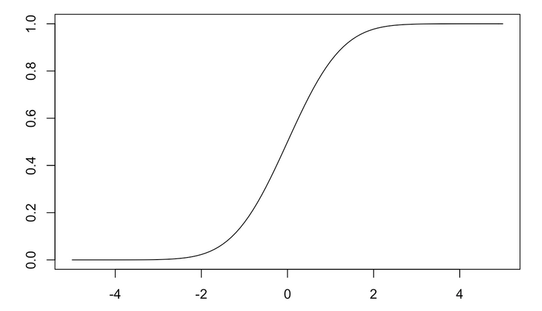
El eje y muestra la probabilidad acumulada, por lo que la función es siempre creciente.
La FDA expresa simplemente el área bajo la curva (es decir, la integral de \(-\infty\) a \(z\)) de la FDP.
Con \(z = 0\), estamos en la media de la normal estándar, por lo que los valores tienen la misma probabilidad de ser menores o mayores que \(z\).
Esto significa que la FDA en \(z = 0\) debe ser \(0,5\), ya que hemos acumulado la mitad de la probabilidad disponible.
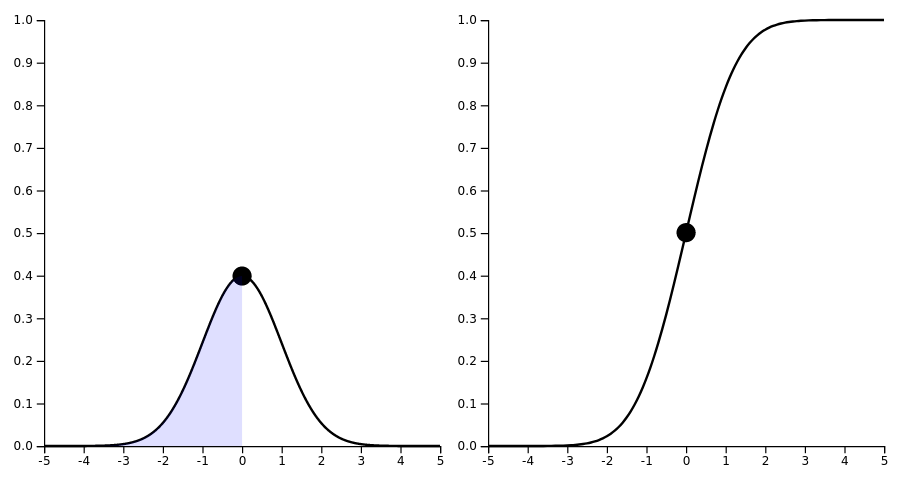
La regla 68-95-99.7 de una distribución normal#
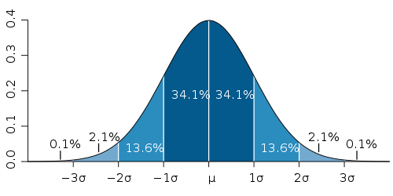
Deje \(X\) ser una variable aleatoria \(\sim N(\mu,\sigma^2)\).
\(\mathbb{P}( \mu - \sigma \leq X \leq \mu+ \sigma) \approx 0.6827\)
\(\mathbb{P}( \mu - 2 \sigma \leq X \leq \mu+ 2 \sigma) \approx 0.9545\)
\(\mathbb{P}( \mu - 3 \sigma \leq X \leq \mu+ 3 \sigma) \approx 0.9973\)
En Python para \(X\sim N(0,1)\):
from scipy.stats import norm
# For the first range (-1 to 1)
prob1 = norm.cdf(1) - norm.cdf(-1)
print(prob1)
# For the second range (-2 to 2)
prob2 = norm.cdf(2) - norm.cdf(-2)
print(prob2)
# For the third range (-3 to 3)
prob3 = norm.cdf(3) - norm.cdf(-3)
print(prob3)
0.6826894921370859
0.9544997361036416
0.9973002039367398
Simetría de la distribución normal#
La PDF de una normal es simétrica alrededor de \(\mu\).
Entonces \(\phi(z)= \phi(-z)\)
\(\Phi(z)=1-\Phi(-z)\)
from scipy.stats import norm
# Density for 1
density1 = norm.pdf(1)
print(density1)
# Density for -1
density2 = norm.pdf(-1)
print(density2)
# Cumulative probability for 0.95
prob1 = norm.cdf(0.95)
print(prob1)
# Tail probability for -0.95 (1 - CDF for -0.95)
prob2 = 1 - norm.cdf(-0.95)
print(prob2)
0.24197072451914337
0.24197072451914337
0.8289438736915182
0.8289438736915182
Trazado de la PDF de normales con distinta varianza en Python
import numpy as np
import matplotlib.pyplot as plt
# Generating sequence
x = np.linspace(-8, 8, 400)
# Calculate densities for different standard deviations
y1 = [norm.pdf(i, loc=0, scale=0.5) for i in x]
y2 = [norm.pdf(i, loc=0, scale=1) for i in x]
y3 = [norm.pdf(i, loc=0, scale=2) for i in x]
# Plotting
plt.plot(x, y1, color='red')
plt.plot(x, y2, color='green')
plt.plot(x, y3, color='blue')
plt.show()
Probabilidades conjuntas#
La noción de función de probabilidad (masa o densidad) puede extenderse a más de una V.A.
Dado un par de variables aleatorias discretas \(X\) y \(Y\), defina la función de masa conjunta por \(f(x,y) = \mathbb{P}(X = x\) y\(Y = y)\) o \(f(x,y) = \mathbb{P}(X = x\) ,\(Y = y)\)
Escribimos \(f\) como \(f_{X,Y}\) cuando queremos ser más explícitos.
Ejemplo: He aquí una distribución bivariante para dos variables aleatorias \(X\) e \(Y\), cada una de las cuales toma los valores 0 ó 1:
\(Y=0\)
\(Y=1\)
\(X=0\)
1/9
2/9
1/3
\(X=1\)
2/9
4/9
2/3
1/3
2/3
1
Así, \(f(1, 1) = \mathbb{P}(X = 1, Y = 1) = 4/9\).
Caso Continuo#
En el caso continuo, llamamos a una función \(f(x,y)\) una FDP para las variables aleatorias \((X, Y)\) si
\(f(x, y) \geq 0\) para todo \((x, y)\),
\(\int_{-\infty}^{\infty} f(x,y)dxdy=1\) y,
para cualquier conjunto \(A \subset \mathbb{R}\times\mathbb{R}, \mathbb{P}((X,Y) \in A)=\int \int_{A}f(x,y)dxdy\).
En el caso discreto o continuo definimos la FCD conjunta como \(F_{X,Y} = \mathbb{P}(X \leq x, Y \leq y)\).
Variables Aleatorias Independientes#
Dos variables aleatorias \(X\) y \(Y\) son independientes si, para cada \(A\) y \(B\), $\(\mathbb{P}(X \in A, Y \in B)=\mathbb{P}(X \in A)\times \mathbb{P}(Y \in B)\)$
Para el caso discreto eso significa que \(\mathbb{P}(X, Y) =\mathbb{P}(X)\times \mathbb{P}(Y)\) y para el caso continuo tenemos que \(f_{X,Y}(x, y) = f_{X}(x)\times f_{Y}(y)\) para todos los valores \(x\) e \(y\).
Valor esperado#
Sea \(X\) un V.R., definimos su expectativa, o media, o momento de primer orden como: $\( \mathbb{E}(X) = \begin{cases} \sum_{x}(x\times f(x)) & \text{if } X \text{ is discrete} \\ \int_{-\infty}^{\infty} x f(x) \, dx & \text{if } X \text{ is continuous} \end{cases} \)$
El valor esperado es la media ponderada de todos los valores posibles que puede tomar una variable aleatoria.
Piense en \(\mathbb{E}(X)\) como la media \(\sum_{i=1}^{n}X_i/n\) de un gran número de resultados de las variables IID \(X_1, \dots,X_n\).
Para el caso de lanzar una moneda dos veces con \(X\) el número de caras: $$\begin{aligned} \mathbb{E}(X) & = & (0 \times f(0)) + (1 \times f(1)) + (2 \times f(2)) \nonumber \ & = & (0 \times (1/4)) + (1 \times (1/2)) + (2 \times (1/4)) =1 \nonumber \
\end{aligned}$$
Sean las variables aleatorias \(X_1, X_2, \dots , X_n\) y las constantes \(a_1, a_2, \dots, a_n\),
\[\mathbb{E}\left(\sum_{i}a_i X_i \right) = \sum_{i} a_{i} \mathbb{E}(X_i)\]
Varianza#
La varianza mide la “dispersión” de una distribución.
Lex \(X\) sea una R.V de media \(\mu\), os la varianza de \(X\) denotada como \(\sigma^2\), \(\sigma^{2}_{X}\) o \(\mathbb{V}(X)\) como: \begin{equation} \mathbb{V}(X) = \mathbb{E}(X - \mu)^2 =
\begin{cases} \sum_{i=1}^{n} f_{x}(x_{i})(x_{i} - \mu)^2 &\text{if } X \text{ is discrete} \ \int (x- \mu)^{2}f_X(x)dx &\text{if } X \text{ is continuous} \end{cases} \end{equation}La desviación estándar \(\sigma\) se define como \(\sqrt{\mathbb{V}(X)}\)
Propiedades#
\(\mathbb{V}(X)= \mathbb{E}(X^2)- \mathbb{E}(X)^2 = \mathbb{E}(X^2)-\mu^2\)
Si \(a\) y \(b\) son constantes, entonces \(\mathbb{V}(aX+b)=a^2\mathbb{V}(X)\)
Si \(X_1,\dots,X_n\) son independientes y \(a_1,\dots,a_n\) son constantes, entonces $\(\mathbb{V}\left(\sum_{i=1}^{n}a_i X_i \right) = \sum_{i=1}^{n} a_{i}^{2} \mathbb{V}(X_{i})\)$
Expectativa y varianza de distribuciones conocidas
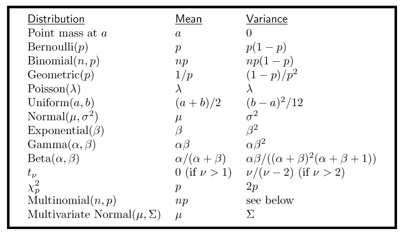
Ley de los Grandes Números#
Forma débil
Este teorema dice que la media de una muestra grande es cercana a la media de la distribución.
Sean \(X_{1},X_{2},\dots X_{n}\) variables aleatorias IID de media \(\mu\) y varianza \(\sigma^2\).
La media \(\overline{X_{n}} =\frac{\sum_{i=1}^{n}X_{i}}{n}\) converge en probabilidad a \(\mu\), \(\overline{X_{n}} \overset{P}{\rightarrow} \mu\)
Esto equivale a decir que para todo \(\epsilon > 0\) $\(\lim_{n\rightarrow \infty} \mathbb{P}(|\overline{X_{n}} - \mu| < \epsilon)=1\)$
Entonces la distribución de \(\overline{X_{n}}\) más concentrada alrededor de \(\mu\) como \(n\) crece.
Ejemplo
Sea el experimento de lanzar una moneda donde la probabilidad de que salga cara es \(p\).
Para una V.A distribuida Bernoulli \(\mathbb{E}(X)=p\).
Sea \(\overline{X_{n}}\) la fracción de caras después de \(n\) lanzamientos.
La ley de los grandes números nos dice que \(\overline{X_{n}}\) converge probabilidad a \(p\).
Esto no implica que \(\overline{X_{n}}\) sea numéricamente igual a \(p\).
Pero si \(n\) es suficientemente grande, la distribución de \(\overline{X_{n}}\) se centrará en torno a \(p\).
- Visualicemos la ejecución del experimento de lanzar la moneda dos veces con $n=1,000$ y $p=0,5$ en el siguiente gráfico.
import numpy as np
import matplotlib.pyplot as plt
def lanzar_moneda():
# 0 es cara, 1 es sello
return np.random.choice([0, 1])
def simulacion(num_lanzamientos):
resultados = []
caras = 0
for _ in range(num_lanzamientos):
resultado = lanzar_moneda()
if resultado == 0:
caras += 1
resultados.append(caras / (len(resultados) + 1))
return resultados
def graficar_simulacion(resultados):
plt.figure(figsize=(12, 6))
plt.plot(resultados, label="Proporción de caras tras N lanzamientos")
plt.axhline(0.5, color='red', linestyle='dashed', label="Valor esperado (0.5)")
plt.xlabel("Número de lanzamientos")
plt.ylabel("Proporción de caras")
plt.title("Ley de los Grandes Números: Lanzamiento de moneda")
plt.legend()
plt.grid(True)
plt.show()
if __name__ == "__main__":
num_lanzamientos = 1000
resultados = simulacion(num_lanzamientos)
graficar_simulacion(resultados)
Este código usa la biblioteca numpy para el lanzamiento aleatorio de la moneda y matplotlib para graficar los resultados. Si ejecutas el código, verás que a medida que el número de lanzamientos aumenta, la proporción de caras se acerca al valor esperado del 50%.
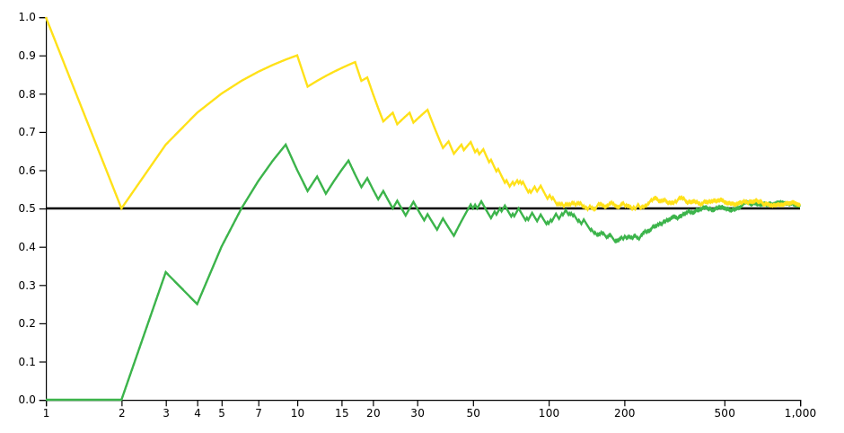
En el eje x mostramos el número de lanzamientos y a lo largo del eje y, mostramos la media acumulada, o nuestro número medio de caras obtenidas.
Al principio hay mucha variación en las puntuaciones medias.
Sin embargo, a medida que avanza hacia 1,000 tiradas, las carreras convergerán hacia la probabilidad esperada de 0.5.
Cuantos más eventos aleatorios independientes tengas, menos variabilidad habrá en torno a los resultados teóricamente esperados.
Teorema del límite central#
Mientras que la ley de los grandes números nos dice que \(\overline{X_{n}}\) se aproxima a \(\mu\) a medida que \(n\) crece.
Esto no es suficiente para decir nada acerca de la distribución de \(\overline{X_{n}}\).
Sean \(X_{1},X_{2},\dots X_{n}\) variables aleatorias IID de media \(\mu\) y varianza \(\sigma^2\).
Sea \(\overline{X_{n}}=\frac{\sum_{i=1}^{n} X_i}{n}\) $\(Z_{n} \equiv \frac{\overline{X_{n}}-\mu}{\sqrt{\mathbb{V}(\overline{X_{n}})}}=\frac{\overline{X_{n}}-\mu}{\frac{\sigma}{\sqrt{n}}} \rightsquigarrow Z\)\( where \)Z\sim N(0,1)$
Esto equivale a: $\(\lim_{n\rightarrow \infty} \mathbb{P}(Z_{n} \leq z) = \Phi(z) = \int_{-\infty}^{z}\frac{1}{\sqrt{2\pi}}e^{-x^2/2}dx\)$
El teorema nos permite aproximar la distribución de \(\overline{X_{n}}\) a una distribución gaussiana cuando \(n\) es grande.
Aunque no conozcamos la distribución de \(X_{i}\), podemos aproximar la distribución de su media.
import numpy as np
import matplotlib.pyplot as plt
def sample_means(sample_size, num_samples):
"""Obtiene una lista con las medias de num_samples muestras, cada una de tamaño sample_size."""
means = []
for _ in range(num_samples):
sample = np.random.uniform(0, 1, sample_size) # distribución uniforme entre 0 y 1
means.append(np.mean(sample))
return means
def plot_hist(means, sample_size):
"""Grafica un histograma de las medias."""
plt.hist(means, bins=30, density=True, edgecolor='black')
plt.title(f'Distribución de las medias de {num_samples} muestras de tamaño {sample_size}')
plt.xlabel('Media de la muestra')
plt.ylabel('Densidad')
plt.grid(True)
plt.show()
if __name__ == '__main__':
sample_sizes = [1, 2, 10, 30, 100]
num_samples = 1000
for size in sample_sizes:
means = sample_means(size, num_samples)
plot_hist(means, size)
Teorema central del límite (2)#
El ejemplo anterior sobre el campo de fútbol era una clara manifestación del teorema central del límite (TLC).
En ese caso estábamos sumando varias variables aleatorias independientes procedentes de una distribución no normal (Binomial).
El TLC también es válido para la suma de variables aleatorias, porque la suma es simplemente \(\overline{X_{n}}\) multiplicada por una constante.
Anotaciones alternativas que muestran que \(Z_{n}\) converge a una Normal
¿Por qué es importante el Teorema Central del Límite?#
Para los experimentadores, el TCL es un concepto extremadamente importante.
Para muchas cuestiones prácticas, no podemos obtener mediciones de toda una población de interés.
Así que tenemos que seleccionar una muestra de la que extraer conclusiones.
¿Cómo podemos estar seguros de que las conclusiones que extraemos sobre la muestra se generalizan a toda la población?
El teorema central del límite nos permite hacer afirmaciones sobre la distribución de nuestras medias muestrales.
Ésta será una idea fundamental para la inferencia estadística.
Ejemplo: Teorema central del límite#
Supongamos que el número de errores \(X\) de un programa informático en una semana sigue una distribución de Poisson con parámetro \(\lambda=5\).
Si \(X \sim Poisson(\lambda)\), \(\mathbb{E}(X)=\lambda\) y \(\mathbb{V}(X)=\lambda\).
Esto significa que, en media, un programa informático comete 5 errores en una semana.
Si tenemos 125 programas independientes \(X_{1},\dots,X_{125}\) nos gustaría aproximar la probabilidad de que el número medio de errores de todos estos programas durante una semana sea inferior a 5.5:
Solución
Denotemos \( S \) como la suma de errores de los 125 programas en una semana: $\( S = X_1 + X_2 + \dots + X_{125} \)$
Dado que \( X \sim Poisson(\lambda) \), sabemos que: $\( \mathbb{E}(X) = \lambda \)\( \)\( \mathbb{V}(X) = \lambda \)$
Por lo tanto, para la suma \( S \) de los 125 programas: $\( \mathbb{E}(S) = 125 \times \lambda = 125 \times 5 = 625 \)\( \)\( \mathbb{V}(S) = 125 \times \lambda = 125 \times 5 = 625 \)$
Usando el Teorema del Límite Central, la suma \( S \) puede ser aproximada por una distribución normal con: $\( \mu = \mathbb{E}(S) = 625 \)\( \)\( \sigma^2 = \mathbb{V}(S) = 625 \)\( \)\( \sigma = \sqrt{625} = 25 \)$
Queremos encontrar la probabilidad de que el número medio de errores de estos 125 programas sea inferior a 5.5. Es decir, queremos \( P(\frac{S}{125} < 5.5) \), lo que es lo mismo que \( P(S < 5.5 \times 125) = P(S < 687.5) \).
Para normalizar \( S \): $\( Z = \frac{S - \mu}{\sigma} = \frac{S - 625}{25} \)$
Ahora, queremos encontrar \( P(Z < \frac{687.5 - 625}{25}) \): $\( P(Z < 2.5) \)$
Finalmente, utilizamos la tabla de la distribución normal estándar (o un software) para encontrar esta probabilidad.
Usando el CLT tenemos que: \begin{align*} \mathbb{P}(\overline{X_{n}} < 5.5) &= \mathbb{P} \left( \frac{\overline{X_{n}}-\mu}{\frac{\sigma}{\sqrt{n}}} < \frac{5.5 -\mu}{\frac{\sigma}{\sqrt{n}}} \right) \ &\approx \mathbb{P}\left( Z < \frac{5.5 - 5}{\frac{\sqrt{5}}{\sqrt{125}}} \right) \ &= \mathbb{P}( Z < 2.5) = 0.9938 \end{align*}
En python:
from scipy.stats import norm
import math
n = 125
sigma = math.sqrt(5)
mu = 5
# First calculation
result_1 = norm.cdf(5.5, loc=mu, scale=sigma/math.sqrt(n))
print(result_1)
# Alternatively
result_2 = norm.cdf(2.5)
print(result_2)
0.9937903346742238
0.9937903346742238
Conclusiones#
Hemos visitado los principales conceptos de la probabilidad, el lenguaje de la incertidumbre.
Las variables aleatorias, las FPD, las FMP, las FPA, son elementos fundamentales para la inferencia estadística.
La ley de los grandes números y el teorema central del límite nos permitirán hacer afirmaciones probabilísticas sobre la población aunque sólo trabajemos con muestras.